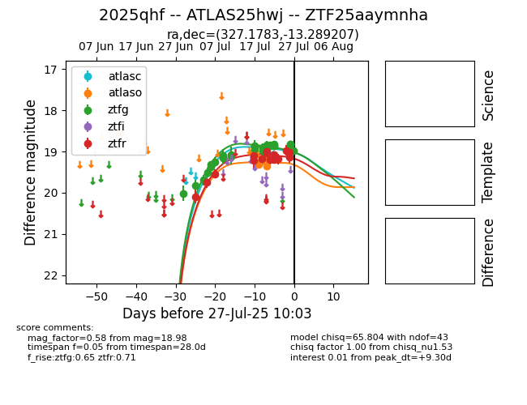

Target 2025qhf at 2025-07-27 10:03, see:
FINK: fink-portal.org/2025qhf
Lasair: lasair-ztf.lsst.ac.uk/objects/2025qhf
ALeRCE: alerce.online/object/2025qhf
TNS: wis-tns.org/object/2025qhf
YSE: ziggy.ucolick.org/yse/transient_detail/2025qhf
alt names
ZTF25aaymnha (ztf,fink)
2025qhf (tns,yse)
ATLAS25hwj (atlas)
coordinates:
equatorial (ra, dec) = (327.1783,-13.28921)
galactic (l, b) = (41.5446,-45.23129)
photometry
last atlasc=19.07, atlaso=19.14, ztfg=18.98, ztfr=19.01
1 atlasc, 5 atlaso, 27 ztfg, 15 ztfr detections
